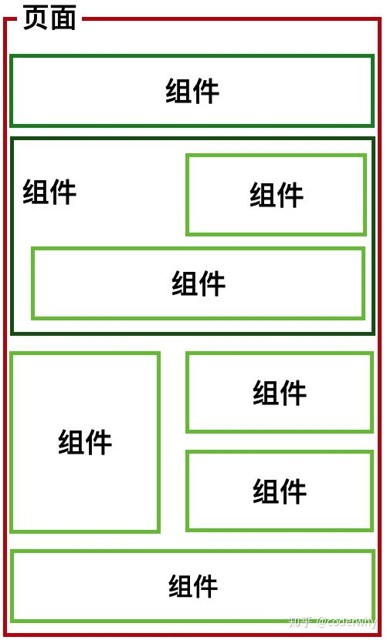

如果我们将一个页面中所有的处理逻辑全部放在一起，处理起来就会变得非常复杂，而且不利于后续的管理以及扩展。
但如果，我们讲一个页面拆分成一个个小的功能块，每个功能块完成属于自己这部分独立的功能，那么之后整个页面的管理和维护就变得非常容易了。

如果我们将一个页面中所有的处理逻辑全部放在一起，处理起来就会变得非常复杂，而且不利于后续的管理以及扩展。
但如果，我们讲一个页面拆分成一个个小的功能块，每个功能块完成属于自己这部分独立的功能，那么之后整个页面的管理和维护就变得非常容易了。
组件化是Vue.js中的重要思想
组件化思想的应用：
组件是Vue开发中，非常重要的一个内容和核心思想
组件的使用分成三个步骤：
全局组件可以在多个Vue实例中使用
若组建只用于一个实例中，则可以注册为局部组件
在上面注册组件的方式，可能会有些繁琐。
Vue为了简化这个过程，提供了注册的语法糖。
主要是省去了调用Vue.extend()的步骤，而是可以直接使用一个对象来代替。
如果把template模块直接写在组件定义里，会很繁琐，不自然。
如果我们能将其中的HTML分离出来写，然后挂载到对应的组件上，必然结构会变得非常清晰。
Vue提供了两种方案来定义HTML模块内容：
let app2 = new Vue({
el: '#app2',
components: {
'my-cpn': {
template: '#myCpn'
}
}
});
组件不能直接访问Vue实例的数据
组件对象也有一个data属性(也可以有methods等属性，下面我们有用到)
只是这个data属性必须是一个函数
而且这个函数返回一个对象，对象内部保存着数据
如果你只是简单写几个Vue的Demo程序, 那么你不需要Vue CLI.
如果你在开发大型项目, 那么你需要, 并且必然需要使用Vue CLI
CLI是什么意思?
Java程序或者Python程序无法直接运行怎么办？
先安装JDK或者Python运行环境
同样，Vue CLI是使用JavaScript写的工具，因此需要JavaScript的运行环境。
传统JavaScript是在浏览器中运行的，但浏览器中的JS运行时是无法创建和修改本地文件的。
要使用Vue CLI就必须先具有运行环境，这个运行环境叫做Node.js
在Window环境下安装Node非常简单，直接下载安装程序，双击即可安装
网址：http://nodejs.cn/download/
默认情况下自动安装Node和NPM
经验：在国内网络环境下，直接从npm仓库中下载Node包可以网速会比较慢，可以考虑使用taobao的镜像。
Vue.js官方脚手架工具就使用了webpack模板
Webpack的全局安装
现在的vue cli版本是3.0+版本，不兼容以前的vue cli 2.x版本
Vue CLI3初始化项目
运行项目：
项目打包：
单文件组件必须和Vue Cli项目一起使用
单文件组件的扩展名为.vue
单文件组件由三个部分组成：
组件设计初衷就是要配合使用的，最常见的就是形成父子组件的关系：组件 A 在它的模板中使用了组件 B。
它们之间必然需要相互通信：父组件可能要给子组件下发数据，子组件则可能要将它内部发生的事情告知父组件。
然而，通过一个良好定义的接口来尽可能将父子组件解耦也是很重要的。
这保证了每个组件的代码可以在相对隔离的环境中书写和理解，从而提高了其可维护性和复用性。
在 Vue 中，父子组件的关系可以总结为 prop 向下传递/事件 向上传递。即父组件通过 prop给子组件下发数据，子组件通过事件给父组件发送消息。
prop 是父组件用来传递数据的一个自定义属性。
父组件的数据需要通过 props 把数据传给子组件，子组件需要显式地用 props 选项声明 "prop"
正常情况下props是一个数组，数组的每一项代表父组件传递的一个参数。
我们可以为组件的 prop 指定验证规则。如果传入的数据不符合要求，Vue 会发出警告。这对于开发给他人使用的组件非常有用。
要指定验证规则，需要用对象的形式来定义 prop，而不能用字符串数组。
其语法如下：
Props数据验证支持以下类型：
子组件传递数据或事件到父组件中我们应该如何处理呢？
这个时候，我们需要使用自定义事件来完成。
什么时候需要自定义事件呢？
自定义事件的流程：
我们来看一个简单的例子：
slot翻译为插槽：
组件的插槽：
例如：移动网站中的导航栏。
但是，每个页面的导航是一样的吗？
像导航这样的组件，它们有很多区别，但是也有很多共性。
如果，我们每一个单独去封装一个组件，显然不合适：比如每个页面都有导航，这部分内容我们就要重复去封装。
但是，如果我们封装成一个，好像也不合理：有些左侧是菜单，有些是返回，有些中间是搜索，有些是文字，等等。
如何封装合适呢？抽取共性，保留不同。
有了这个插槽后，父组件如何使用呢？
当子组件的功能复杂时，子组件的插槽可能并非是一个。
比如我们封装一个导航栏的子组件，可能就需要三个插槽，分别代表左边、中间、右边。
那么，外面在给插槽插入内容时，如何区分插入的是哪一个呢？
这个时候，我们就需要给插槽起一个名字
只要给slot元素一个name属性即可
如何使用呢？
提示：v-slot 指令可以使用 # 替代，比如：“v-slot:job” 可以缩写为 “#job”
在真正使用插槽之前，我们需要先理解一个概念：编译作用域。
官方对于编译的作用域的解释比较简单，不利于理解，我们还是通过一个例子来理解这个概念。
考虑下面的代码是否最终是可以渲染出来的：
我是子组件
最终可以渲染出来，也就是使用的是Vue实例的属性。为什么呢？
官方给出了一条准则：父组件模板的所有东西都会在父级作用域内编译；子组件模板的所有东西都会在子级作用域内编译。
作用域插槽是slot一个比较难理解的点，而且官方文档说的又有点不清晰。
这里，我们用一句话对其做一个总结：
然后是一个例子：子组件中包括一组数据，比如：pLanguages: ['JavaScript', 'Python', 'Swift', 'Go', 'C++']
然而，这个组件需要在多个界面进行展示，并且，如何展示是由父页面来控制：
在父组件使用我们的子组件时，从子组件中拿到数据：
总结：使用作用域插槽，可以实现数据来自子组件，但父组件可以使用该数据。
说起路由你想起了什么？
路由是一个网络工程里面的术语。
路由（routing）就是通过互联的网络把信息从源地址传输到目的地址的活动. --- 维基百科
生活中的路由器提供了两种机制: 路由和转送.
网站中的路由，是指在浏览器中显示不同的页面。
网站路由分为两个阶段：
早期的网站开发整个HTML页面是由服务器来渲染的.
服务器直接生产渲染好对应的HTML页面, 返回给客户端进行展示.
但是, 一个网站, 这么多页面服务器如何处理呢?
一个页面有自己对应的网址, 也就是URL.
URL会发送到服务器, 服务器会通过URL找到一个页面运行，并返回最终的HTML代码
当我们页面中需要请求不同的路径内容时, 交给服务器来进行处理, 服务器渲染好整个页面, 并且将页面返回给客户顿.
后端路由的缺点:
前后端分离阶段：
单页面富应用阶段:
前端路由的核心：改变了网页的URL，但页面不进行整体刷新，只有局部页面内容进行更新。
vue-router是Vue.js官方的路由插件，它和vue.js是深度集成的，适合用于构建单页面应用。
我们可以访问其官方网站对其进行学习: https://router.vuejs.org/zh/
vue-router是基于路由和组件的
安装路由组件：
引用路由组件，main.js：
vue-router的配置步骤
使用vue-router的步骤:
import VueRouter from 'vue-router'
import Vue from 'vue'
import Home from '../components/Home'
import About from '../components/About'
// 1.通过Vue.use(插件), 安装插件
Vue.use(VueRouter)
// 2.创建VueRouter对象
const routes = [
// 默认页面
{
path: '',
redirect: '/home'
},
{
path: '/home',
component: Home
},
{
path: '/about',
component: About
}
]
const router = new VueRouter({
// 配置路由和组件之间的应用关系
routes,
mode: 'history', //路由模式
linkActiveClass: 'active'
})
// 3.将router对象传入到Vue实例
export default router
我是APP组件
在前后端分离的项目当中，前端项目（例如Vue项目）主要负责数据的渲染，即把纯数据显示成HTML元素，例如表格，以可视化的方式展示给最终用户。
那么，数据是从哪里来的？
一般来说，数据是由服务器从数据库当中读取，然后处理之后返回给客户端的。
前后端分离的项目中，后端通过提供一个URL网址的形式，把数据封装成JSON格式交给前端渲染。
前端使用AJAX异步的方式从后端提供的URL网址来请求数据，但是不同的浏览器创建AJAX对象（XMLHttpRequest）的方式也有很大不同，一般来说都会使用第三方的库来AJAX异步请求。
Axios 是一个基于 promise 的易用、简洁且高效的HTTP请求库。从浏览器中创建 XMLHttpRequests。
特性：
浏览器支持
 |
 |
 |
 |
 |
 |
|
|---|---|---|---|---|---|---|
| Latest ✔ | Latest ✔ | Latest ✔ | Latest ✔ | Latest ✔ | 8+ ✔ |
第一步：安装Axios：
第二步：引入Axios，文件/src/main.js：
第三步：Vue挂载Axios，文件/src/main.js：
GET请求：
POST请求：
前后端分离项目中，后端有时和前端是一起开发的
在开发前端项目的时候，很多数据还无法真实请求，但此时又不能把数据写死在页面当中，还是必须通过AJAX请求来获取
常用的产生模拟数据的方法有三种：
Mock库给我们提供了一种生成模拟数据的平台，可以通过Mock库来配置生成不同的虚拟数据。
Mock 特性
Element-Ul是国内饿了么前端团队推出的一款基于Vue.js 2.0 的桌面端UI框架，一套为开发者、设计师和产品经理准备的基于 Vue 2.0 的桌面端组件库。
可以说这是目前Vue生态圈最火的桌面UI组件库，没有之一。基本你使用Vue没有不知道这个组件库的。
官网：https://element.eleme.cn/#/zh-CN/
安装：
引入 Element，路径main.js：
ElementUI实际上提供了一套UI标签替代原来的HTML标签。
所有ElementUI的标签都以el开头，例如el-button表示ElementUI中的按钮。
http://element-cn.eleme.io/#/zh-CN/component/给出了所有的ElementUI组建的示例。
大部分时候需要使用组建，都可以直接复制官网的例子。